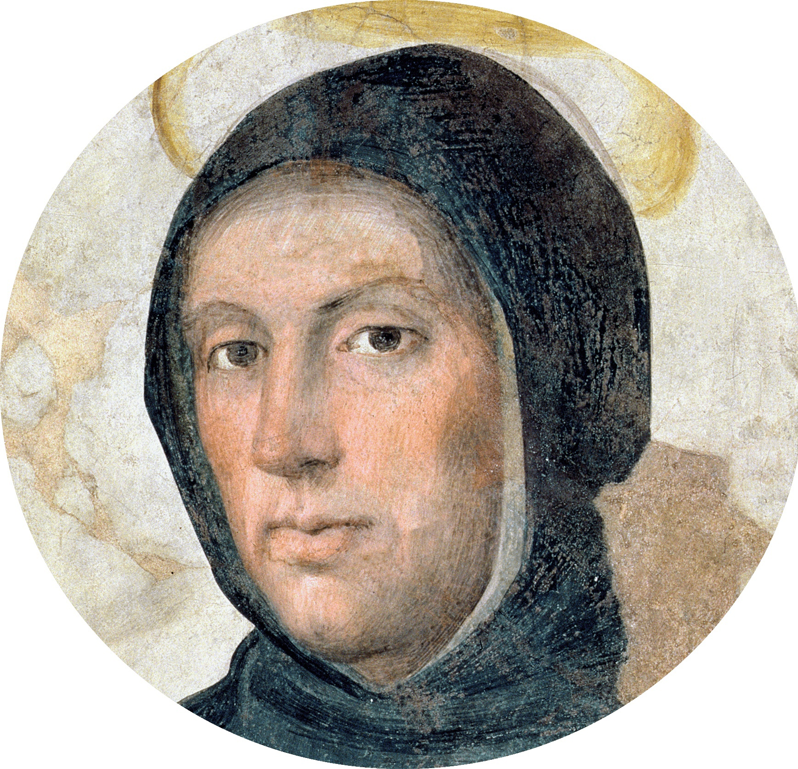

Фома Аквинский
28 Января 1225 – 7 Марта 1274 гг. (49 лет)

Детство и юность
Сын Ландальфа, графа Аквинского, святой Фома Аквинский родился около 1225 г. в итальянском городе Роккасекка, в Королевстве Сицилия. Фома был младшим из девяти детей в семье. Несмотря на то, что родители мальчика происходили из рода императоров Фредерика I и Генриха VI, семья принадлежала к низшему сословию дворянства.
Перед рождением сына, святой отшельник предсказал матери мальчика, что ребёнок войдёт в Орден братьев-проповедников и станет большим учёным, достигнув невероятной степени святости.
Следуя традициям того времени, в 5 лет мальчика отправляют в аббатство Монте Кассино, где он учится у монахов-бенедиктинцев.
В монастыре Фома пробудет до 13 лет, а после смена политического климата в стране заставит его вернуться в Неаполь.
Философия Аквинского
О мнемонических приемах
Ранние биографы Фомы Аквинского утверждают, что он обладал изумительной памятью. Еще в школьные годы он запоминал все, что говорил учитель, а позже, в Кельне, развивал свою память под руководством того же Альберта Великого. Собрание изречений отцов церкви о четырех Евангелиях, подготовленное им для папы Урбана, было составлено из того, что он запомнил, просматривая, но не переписывая рукописи в различных монастырях. Его память, по мнению современников, обладала такой силой и цепкостью, что в ней сохранялось все, что ему доводилось прочитать.
Память для Фомы Аквинского, как и для Альберта Великого, была частью добродетели благоразумия, которую следовало пестовать и развивать. Для этого Фома сформулировал ряд мнемонических правил, которые описал в комментарии к трактату Аристотеля «О памяти и припоминании» и в «Сумме теологии»:
— Способность к запоминанию расположена в «чувствительной» части души и связана с телом. Поэтому «чувственные вещи более доступны человеческому познанию». Знания, не связанные «с какими-либо телесными подобиями», легко забываются. Поэтому следует искать «символы, присущие тем вещам, которые нужно запомнить. Они не должны быть слишком известными, поскольку нас более интересуют непривычные вещи, они более глубоко и четко запечатлеваются в душе. <…> Следуя этому, необходимо придумать подобия и образы»
— Память подконтрольна рассудку, поэтому второй мнемонический принцип Фомы — «расположить вещи [в памяти] в определенном порядке, чтобы, припомнив одну какую-то черту, можно было бы легко перейти к следующей».
— Память связана с вниманием, поэтому нужно «испытывать привязанность к тому, что нужно запомнить, ведь то, что сильно запечатлелось в душе, не так легко из нее ускользает».
— И наконец, последнее правило — регулярно размышлять о том, что нужно запомнить.
О взаимоотношении теологии и философии
Аквинат выделял три типа мудрости, каждый из которых наделен своим «светом истины»: мудрость Благодати, богословскую мудрость (мудрость откровения, использующую разум) и метафизическую мудрость (мудрость разума, постигающую сущность бытия). Исходя из этого, он полагал, что предметом науки являются «истины разума», а предметом теологии — «истины откровения».
Философия, используя свои рациональные методы познания, способна изучать свойства окружающего мира. Догматы веры, доказанные с помощью рационализированных философских доводов (например, догмат о бытии Бога), становятся более понятными человеку и тем самым укрепляют его в вере. И в этом смысле научно-философское знание является серьезной опорой в обосновании христианского вероучения и опровержении критики веры.
Но многие догматы (например, идея о тварности мира, концепции первородного греха, воплощения Христа, воскресения из мертвых, неизбежности Страшного суда и т. п.) не поддаются рациональному обоснованию, поскольку в них отражены сверхъестественные, чудесные качества Бога. Человеческий разум не способен постичь божественный замысел в полном объеме, поэтому истинное, высшее знание науке неподвластно. Бог — это удел сверхразумного познания и, следовательно, предмет теологии.
Впрочем, для Фомы между философией и теологией нет противоречия (как нет его и между «истинами разума» и «истинами откровения»), поскольку философия и познание мира приводят человека к истинам веры. Поэтому, в представлении Фомы Аквинского, изучая вещи и явления природы, истинный ученый прав лишь тогда, когда раскрывает зависимость природы от Бога, когда показывает, как в природе воплощается божественный замысел.
Об Аристотеле
Альберт Великий, учитель Фомы Аквинского, был автором первого написанного в Западной Европе комментария к «Никомаховой этике» Аристотеля. Именно он ввел в обиход католического богословия сочинения Аристотеля, до того известные на Западе преимущественно в изложении арабского философа Аверроэса. Альберт показал отсутствие противоречий между учением Аристотеля и христианством.
Благодаря этому Фома Аквинский получил возможность христианизировать античную философию, в первую очередь — труды Аристотеля: стремясь к синтезу веры и знания, он дополнил вероучительные догматы и религиозно-философские умозрения христианства социально-теоретической и научной рефлексией, опирающейся на логику и метафизику Аристотеля.
Фома не был единственным богословом, пытавшимся апеллировать к трудам Аристотеля. Это же делал, например, его современник Сигер Брабантский. Однако аристотелизм Сигера считали «аверроистским», сохранившим некоторые идеи, привнесенные в труды Аристотеля его арабскими и иудейскими переводчиками и интерпретаторами. «Христианский аристотелизм» Фомы, опиравшийся на «чистое» учение древнегреческого философа, не противоречащее христианству, победил — а Сигер Брабантский за свои убеждения был предан суду инквизиции и убит.
Доказательства бытия Божия
В первой части «Суммы теологии» Аквинат обосновывает необходимость теологии как науки со своей целью, предметом и методом исследования. Предметом ее он полагает первопричину и предельную цель всего сущего, то есть Бога. Именно поэтому трактат начинается с пяти доказательств бытия Божия. Именно благодаря им в первую очередь известна «Сумма теологии», несмотря на то, что из 3 500 листов, которые занимает этот трактат, существованию Бога посвящены всего полтора.
- Первое доказательство бытия Божия опирается на аристотелевское понимание движения. Фома утверждает, что «все, что движется, должно быть движимо чем-то иным» . Попытка представить себе ряд объектов, каждый из которых заставляет двигаться предыдущий, но и сам при этом приводим в движение следующим, уводит в бесконечность. Попытка это вообразить неизбежно должна привести нас к пониманию того, что был некий перводвигатель, «который не движим ничем, а под ним все разумеют Бога».
- 1Второе доказательство немного напоминает первое и также опирается на Аристотеля, в этот раз — на его учение о четырех причинах. По Аристотелю, у всего сущего должна быть действующая (или порождающая) причина, то, с чего начинается существование вещи. Поскольку ничто не может произвести самое себя, должна быть некая первопричина, начало всех начал. Это и есть Бог.
- Третье доказательство бытия Божия — доказательство «от необходимости и случайности». Фома поясняет, что среди сущностей есть такие, которые могут как быть, так и не быть, то есть их существование случайно. Есть и необходимые сущности. «Но все необходимое либо имеет причину своей необходимости в чем-либо еще, либо нет. Однако невозможно, чтобы [ряд] необходимых [сущих], имеющих причину своей необходимости [в чем-то еще], уходил в бесконечность». Следовательно, есть некая сущность, необходимая сама по себе. Эта необходимая сущность может быть только Богом.
- Четвертое доказательство «исходит из степеней [совершенств], обнаруживаемых в вещах. Среди вещей обнаруживаются более и менее благие, истинные, благородные и так далее». Однако о степени благости, истинности и благородства можно судить только в сравнении с чем-то «наиболее истинным, наилучшим и благороднейшим». Этими свойствами обладает Бог.
- В пятом доказательстве Аквинат вновь опирается на учение Аристотеля о причинах. Исходя из аристотелевского определения целесообразности, Фома констатирует, что все предметы бытия направлены в своем существовании к какой-то цели. При этом «они достигают цели не случайно, но намеренно». Поскольку сами предметы «лишены разумения», следовательно, «существует нечто мыслящее, которым все природные вещи направляются к [своей] цели. И таковое мы называем Богом».
Личная жизнь
Сыновьям Ландольфа прочили военную карьеру, а Фоме, как самому младшему, — путь служения Богу, что было общепринятой практикой среди итальянской знати в те времена. Синибальдо, дядя Фомы по отцовской линии, занимал должность аббата бенедиктинского монастыря в Монтекассино, одного из крупнейших и самых известных в католической Европе. Планировалось, что повзрослевший Томмазо сделает церковную карьеру и получит ту же должность в будущем. Поэтому уже в раннем детстве мальчика отдали на воспитание в обитель к монахам-бенедиктинцам, где он и находился до 14 лет.
Смерть
В июне 1272 г. принимает предложение отправиться в Неаполь, чтобы обучать монахов-доминиканцев в примыкающем к университету монастыре. Он по-прежнему много пишет, но значимости в его трудах становится всё меньше.
Во время празднования Дня св. Николая в 1273 г. Фоме Аквинскому является видение, которое отрешает его от работы.
В январе 1274 г. Фома Аквинский отправляется в паломничество во Францию, на богослужения в честь Второго Лионского собора. Однако по пути его сражает недуг, и он останавливается в цистерцианском монастыре г. Фоссанова в Италии, где и скончается 7 марта 1274 г. В 1323 г. Фома Аквинский был канонизирован папой Иоанном XXII.
Основные труды
Перу Фомы Аквинского, писателя весьма плодовитого, принадлежит около 60 трудов, от кратких заметок до огромных томов. Рукописи его работ разошлись по библиотекам всей Европы. Философские и богословские труды его затрагивают широкий спектр вопросов, включая комментарии к библейским текстам и рассуждения на тему натуральной философии Аристотеля.
Вскоре после смерти Фомы Аквинского, труды его завоёвывают широкое признание и получают горячую поддержку среди представителей доминиканского ордена. Его “Summa Teologica” («Сумма теологии»), потеснив «Сентенции в четырёх книгах» Петра Ломбардского, становится основным учебником по богословию в университетах, семинариях и школах того времени. Влияние трудов Фомы Аквинского на формирование философской мысли столь велико, что количество написанных к ним комментариев на сегодняшний день составляет не менее 600 работ.